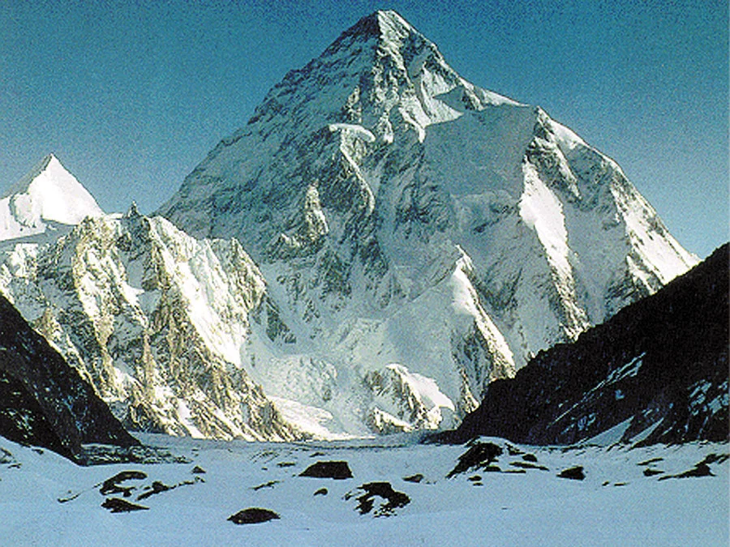

Home
There are at least 108 mountains on Earth with elevations of 7,200 metres (23,622 ft) or greater
above sea level. The vast majority of these mountains are located on the edge of the Indian and
Eurasian plates in China, India, Nepal and Pakistan.
Figure demonstrating the concept of topographic prominence:
The prominence of a peak is the height of the peak's summit above the lowest contour line
encircling it and no higher summit. For example, vertical arrows show the topographic prominence of
three peaks on an island. A dotted horizontal line links each peak (except the highest) to its key col.
The dividing line between a mountain with multiple peaks and separate mountains is not always clear
(see also Highest unclimbed mountain).
A popular and intuitive way to distinguish mountains from subsidiary peaks is by their height above
the highest saddle connecting it to a higher summit, a measure called topographic prominence or
re-ascent (the higher summit is called the "parent peak"). A common definition of a mountain is a
summit with 300 m (980 ft) prominence. Alternatively, a relative prominence (prominence/height) is
used (usually 7–8%) to reflect that in higher mountain ranges everything is on a larger scale.
The table below lists the highest 100 summits with at least 500 m (1,640 ft) prominence,
approximating a 7% relative prominence. A drawback of a prominence-based list is that it may exclude
well-known or spectacular mountains that are connected via a high ridge to a taller summit, such as
Eiger, Nuptse or Annapurna IV. A few such peaks and mountains with nearly sufficient prominence are
included in this list, and given a rank of "S".
The Top 5 Highest Mountains In The World
Data Source: Wikipedia
| Rank |
Name |
High |
Location |
First Ascent |
| 1 |
Mount Everest  |
8848 |
Nepal/China |
1953 |
| 2 |
K2  |
8611 |
Pakistan/China |
1954 |
| 3 |
Kangchenjunga  |
8586 |
Nepal/India |
1955 |
| 4 |
Lhotse  |
8516 |
Nepal/China |
1956 |
| 5 |
Makalu  |
8485 |
Nepal/China |
1955 |